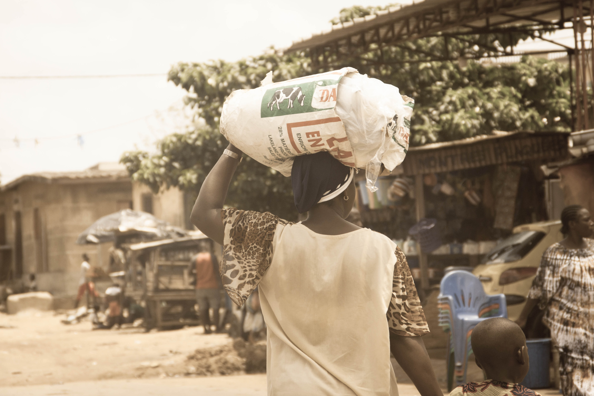
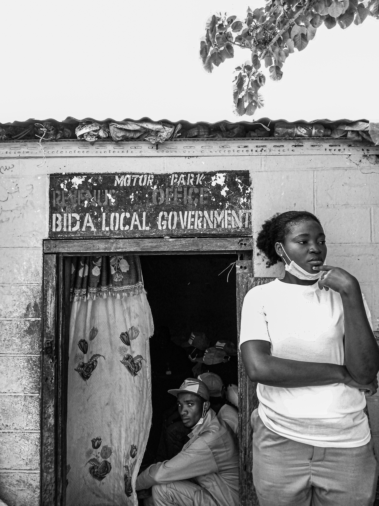
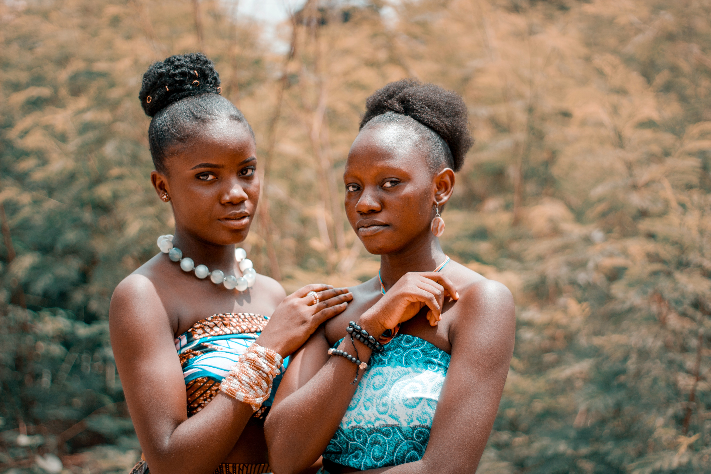

Utopian dreamer
In a world where racism still exists, there are many people who are proud to be different and stand up for their rights. These people are brave enough to challenge the status quo and fight for what is right, even when it is difficult. They refuse to be silenced by prejudice and discrimination, and they work tirelessly to create a more just and equal society. One of the ways that people are getting rid of racism is by educating themselves and others about its harmful effects. They are learning about the history of racism and how it has impacted different communities, and they are using this knowledge to inform their actions. By understanding the roots of racism, they are better equipped to combat it in all its forms.
All perfect
Another way that people are fighting racism is by being proud of who they are and celebrating their cultural heritage. They are not ashamed of their skin color, religion, or background, but rather, they embrace it and use it as a source of strength. By being proud of their identity, they are sending a powerful message that diversity is something to be celebrated, not feared. Many people are also working to create safe spaces where individuals from different backgrounds can come together and share their experiences. These spaces provide an opportunity for people to learn from each other and build bridges across cultural divides. By listening to each other's stories and perspectives, they are able to develop empathy and understanding, which is critical in the fight against racism. Some people are using art and culture as a tool to combat racism. They are using music, film, literature, and other forms of art to challenge stereotypes and promote positive representations of marginalized communities. Through their creative work,

Invincible dams
Change and development were dammed back by invincible dams for ever. But the Modern Utopia must be not static but kinetic, must shape not as a permanent state but as a hopeful stage, leading to a long ascent of stages.
Do not resist
Nowadays we do not resist and overcome the great stream of things, but rather float upon it. We build now not citadels, but ships of state. For one ordered arrangement of citizens rejoicing in an equality of happiness safe and assured to them and their children for ever, we have to plan "a flexible common compromise, in which a perpetually novel succession of individualities may converge most effectually upon a comprehensive onward development."

Modern conceptions
That is the first, most generalised difference between a Utopia based upon modern conceptions and all the Utopias that were written in the former time.
Utopian dreamer
The Utopia of a modern dreamer must needs differ in one fundamental aspect from the Nowheres and Utopias men planned before Darwin quickened the thought of the world.
Utopian dreamer
The Utopia of a modern dreamer must needs differ in one fundamental aspect from the Nowheres and Utopias men planned before Darwin quickened the thought of the world.
